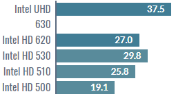

【2019年版】まだCore i3以上のCPUのパソコンを考えてるあなたへ
今，このブログをご覧になっている方は
- 学校のレポート課題をやるのにいちいち学校のパソコンを使うのはめんどくさい！
- スマホは持ってるけどパソコンじゃないとできない！
そして，
- 快適に長くパソコン使いたいから性能が高いのが良い！
- 調べたら最低でもCore i3以上の方が良さそう！
- Pentium，Celeronなんて遅すぎる！
損するかもしれません！！
- まさか，Core i3以上のCPUのパソコンでofficeやネットサーフィンのような軽い作業をしようとしているのではありませんか？
- CPUが良ければ快適にできると勘違いしていませんか？
- Pentium，Celeronなんて何もできないほど性能低すぎて安物の銭失いだと思っていませんか？
オーバースペックです！
構成次第でCore i7でもとても遅い動作になります！
昔の話です！
上の１～３まで理由を言っていきます。
-
軽い作業でCorei3以上は必要ない
-
CPUだけで快適になるわけではない
-
最新CPU Celeron，Pentiumの性能
-
まとめ
- officeやネットサーフィンのような軽い作業はCore i3以上のCPU性能は必要ありません！
- メモリは最低でも8GBは付けましょう！
HDDではなくSSDにしましょう！ - Celeron G4900(2018年発売)とCore i3-3225（2012年発売）は同等の性能
Pentium Gold G5600(2018年発売)はCore i3-6320（2015年発売）より上の性能
それでは良いパソコンライフを！
まず，１について簡単な質問です。「あなたの持っているスマートフォンとスーパーコンピュータではYoutubeを見るのにどっちが最適でしょうか？」もちろん，スマートフォンの方がスーパーコンピュータより電気も食わず維持費も掛からず場所も取りません。しかし，
あなたはスーパーコンピュータの方を選ぼうとしているのと同じことをパソコン選びでしようとしているのです！
officeやネットサーフィンのような軽い作業はCore i3以上のCPU性能は必要ないのです！
次に，２について，きっとあなたは「すぐに起動」し「調べ物をするときすぐに検索でき」「officeなどのソフトもフリーズしない」快適なパソコンを探しているのだと思います。もちろん，CPUの性能が高ければ高いほどできることが増え処理能力が高くなります。しかし，
CPUだけが高性能なだけでは快適に動作しません！
パソコンにはHDDやSSDやメモリやグラフィックボードなどCPUと同じくらい大切なパーツがあります。例えば，メモリが4GBの場合ではWindows10 64bitを使う場合システム的なところだけで2GB必要になります。そして，セキュリティーソフトも常に動作するためメモリが必要になります。実際に使えるのは実質多くても2GBしかありません。タブを少し多く開くだけでメモリ不足になります。すると，HDDやSSDなどの一部をメモリとして使うようになります。メモリとHDDやSSDではデータのやり取りする速さはメモリのほうが圧倒的に速いのです。そのため，メモリ不足になるとフリーズしたり動作が重くなってしまうのです。従って，
メモリは最低でも8GBは付けましょう！
また，HDDかSSDかでも
かなり変わります。パソコンを起動させるのにHDDだと1分くらいですが，SSDでは約10秒で起動します！ソフトの起動や読み込みだって爆速なのです！従って，
HDDではなくSSDにしましょう！
これからはメモリ8GB，SSD搭載のパソコンを選ぶようにしましょう！
次に，３についてまずCPUの性能がどう分類されているのか知らない人のために，
Xeon＞Core i9＞Core i7＞Core i5＞Core i3＞(Core 2 Duo)＞Pentium＞Celeron＞(Atom)
と分類されています。カッコが付いてるのは今は販売していないものです。一番上のXeonは企業向けのサーバー用なので一般向けではありません。
昔のCeleronやPentiumやCore 2 Duoなどの低スペックパソコンは起動に１,２分掛かり，調べ物をするのもなかなかページが表示されませんでした。Officeも文書を書くだけならなんとかできるけどしょっちゅうフリーズしまくってイライラさせられました。もちろん，上述の２についてにあったようにメモリやHDDが原因でもあります。しかし，メモリやSSDにしてもカクカクし動作が遅い状態が解決できないほどCPUの性能が低すぎて使い物になりませんでした。でもそれは 昔の話です！
今では最新で一番安いCeleron G4900(2018年発売，定価$42=4590円)と昔のCorei3-3225（2012年発売，定価$134＝14645円）を比べてみましょう。まず，ベンチマークソフトCinebench R15の結果で比較します。


（参照：https://btopc-minikan.com/cpu-hikaku.html)
左からメーカー名，CPU名，コア数・スレッド数・動作周波数，内蔵グラフィック，性能値です。イメージとしてコアはCPUの頭脳の数，スレッドはそのコアが受け持てる作業数，動作周波数はCPUの頭脳の速さと捉えてください。青色がすべてのコアを合わせたの性能値（マルチコア）でオレンジ色が1つ当たりコアの性能値（シングルコア）で高いほど高性能です。これを見て分かる通りマルチコアの性能はCeleronが2コア2スレッドに対しCore
i3の方は2コア4スレッドなので負けてしまいましたが，実際に使用してる時には差は全く感じられないほどの差です。そしてなんと！
CeleronとCore i3シングルコアの性能は同じなのです！
ここでシングルコアの性能とマルチコアの性能どっちが大切なんでしょう？
答えは
用途次第です！プログラミングやExcelなどの計算やゲームなどではシングルコアの性能が高いほうが演算が高速になります。動画編集やサーバーなどの並列作業を必要とするものはマルチコアの性能が高いほうが同時作業能力が高くなります。ただ，マルチコアの性能が高くてもすべてのコアが同時に並列処理をしてくれなければ使わないコアが出てきてしまいます。実際今のソフトウェアはある程度はマルチコアに最適化していますが，動画編集やサーバーなどのわずかな用途にしか最大パフォーマンスを出せないのが現状です。そのため，シングルコアの性能の方が実用面では大切なのです。
次は最新CPUのPentium Gold G5600(2018年発売，定価$86=9399円)と少し古いCore i7-6700（2015年発売，定価$303=33116円）とCore i3-6320（2015年発売，定価$149=16284円）を比べてみましょう。同様にベンチマークソフトCinebench R15の結果で比較します。


（参照：https://btopc-minikan.com/cpu-hikaku.html)
これを見て分かる通りマルチコアの性能はPentiumが2コア4スレッドに対しCore i7の方は4コア8スレッドなので負けてしまいました。ここまで差があると使用してる時にかなり同時並列処理能力が変わってきます。しかしなんと！
PentiumとCore i7のシングルコアの性能は同じなのです！
そして
PentiumとCore i3のシングルコア，マルチコアの性能が同じなのです！ これでお分かりいただけましたか？Pentium，Celeronだと何もできないほど性能低いなんて話は昔の話だと。
以上の話をまとめる前にもっと後押しすると，Pentium，CeleronなどのCPU内蔵グラフィックを比較してみましょう。ちなみにグラフィック性能が高いほどゲームが快適に動作したり動画の画質を高くしても快適に動作します。

（参照：https://chimolog.co/bto-intel-gpu/)
こちらはパソコン業界では有名なちもろぐさんという方が実際にパソコンを使いいろんなゲームのfpsを計測した結果です。これを見ると分かるようにCPUとしての性能はCorei3などと同等でも，内蔵グラフィック性能は最新のCPUの方が明らかに高いのです。
従って，以上の話をまとめると，
Celeron G4900(2018年発売)とCore i3-3225（2012年発売）は同等の性能
Pentium Gold G5600(2018年発売)はCore i3-6320（2015年発売）より上の性能
なのです！
Celeron G4900程度の性能でも十分ですが不安と思う方はPentium Gold G5600程度の性能を選べば後悔することはありません！